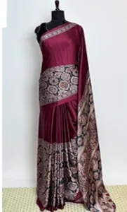
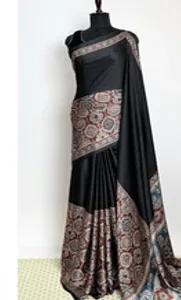

AI agent · Computer vision
Saree Visual Similarity Search
Those particles are a real saree from the catalogue. Upload a photo and a LangChain agent on Gemini decides when to search, applies filters, and explains every match.
- 1,059 images
- 645 designs
- 85 CI tests
- FashionSigLIP + FAISS

